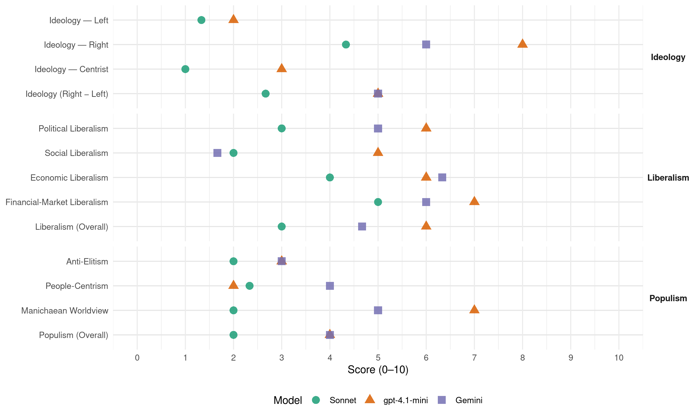

SGP (Netherlands, 1989)
manifesto_id 22952_198909
Get full text: This site shows derived annotations and short verbatim quotes only. The full manifesto text is © Manifesto Project / WZB — obtain it via manifesto-project.wzb.eu using the manifesto_id above.
Headline scores
| Dimension | Sonnet | gpt-4.1-mini | Gemini |
|---|---|---|---|
| Populism (Overall) | 2.0 | 4.0 | 4.0 |
| Anti-Elitism | 2.0 | 3.0 | 3.0 |
| People-Centrism | 2.3 | 2.0 | 4.0 |
| Manichaean Worldview | 2.0 | 7.0 | 5.0 |
| Ideology (Right − Left) | 2.7 | 5.0 | 5.0 |
| Liberalism (Overall) | 3.0 | 6.0 | 4.7 |
| Political Liberalism | 3.0 | 6.0 | 5.0 |
| Social Liberalism | 2.0 | 5.0 | 1.7 |
| Economic Liberalism | 4.0 | 6.0 | 6.3 |
| Financial-Market Liberalism | 5.0 | 7.0 | 6.0 |
Evidence per dimension
Economic Liberalism
Gemini · score 6.0 · verified · chunk 1
“afgestoten naar de particuliere sector”
Waar mogelijk moeten taken worden afgestoten naar de particuliere sector (privatisering).
Gemini · score 6.0 · verified · chunk 2
“ruimte maken voor het particulier initiatief”
rentmeesterschap. De overheid moet ruimte maken voor het particulier initiatief door de voorwaarden te scheppen, op basis
Gemini · score 7.0 · verified · chunk 3
“mogelijkheden om overheidstaken af te sloten, o.a. door privatisering”
verder onderzoek moeten worden verricht naar mogelijkheden om overheidstaken af te sloten, o.a. door privatisering; b.Verder dient te worden voortgegaan met
gpt-4.1-mini · score 3.0 · verified · chunk 1
“De overheid moet over voldoende middelen beschikken om haar taken te kunnen vervullen”
De overheid moet over voldoende middelen beschikken om haar taken te kunnen vervullen. Dit geldt ook voor gemeenten en provincies. Specifieke uitkeringen moeten zoveel mogelijk worden overgeheveld naar de algemene uitkering uit het Gemeente- respectievelijk Provinciefonds.
gpt-4.1-mini · score 7.0 · verified · chunk 2
“markt, concurrentie, bedrijf, belasting, handel, regulering, privatisering”
…markt, concurrentie, bedrijf, belasting, handel, regulering, privatisering, of gerelateerde economische beleids-termen. …
gpt-4.1-mini · score 8.0 · verified · chunk 3
“De export naar de zg. Derde Wereldlanden dient te voldoen aan hoge eisen van kwaliteit. Geen dumping van hier te lande onverkoopbare produkten”
Nederland streeft niet alleen naar het slechten van tariefbarrières maar ook naar het verwijderen van niet-tarifaire belemmeringen in het kader van de zg. GATT-overeenkomst. (General Agreements on Tariffs and Trade). De export naar de zg. Derde Wereldlanden dient te voldoen aan hoge eisen van kwaliteit. Geen dumping van hier te lande onverkoopbare produkten. “Holland Promotion” behoort te voldoen aan het vereiste van een goed rentmeester-schap.
Sonnet · score 4.0 · verified · chunk 1
“taken worden afgestoten naar de particuliere sector”
Waar mogelijk moeten taken worden afgestoten naar de particuliere sector (privatisering).
Sonnet · score 5.0 · mixed · chunk 2
“ruimte maken voor het particulier initiatief”
De overheid moet ruimte maken voor het particulier initiatief door de voorwaarden te scheppen, op basis waarvan zelfstandige ondernemers hun beroep en bedrijf kunnen uitoefenen.
Sonnet · score 6.0 · mixed · chunk 3
“mogelijkheden om overheidstaken af te stoten, o.a. door privatisering”
verder onderzoek moeten worden verricht naar mogelijkheden om overheidstaken af te stoten, o.a. door privatisering
Financial-Market Liberalism
Gemini · score 6.0 · verified · chunk 3
“kredietverlening in overeenstemming te worden gebracht”
bestrijding van de inflatie. Waar nodig dient de kredietverlening in overeenstemming te worden gebracht met de werkelijke behoefte. In internationaal
gpt-4.1-mini · score 7.0 · verified · chunk 3
“De financiële administratie moet zodanig worden verbeterd dat het mogelijk wordt eventuele tegenvallers vroegtijdig te onderkennen”
Er dient een wettelijke regeling te komen dat departementen bij overschrijding verplicht worden die overschrijding binnen de eigen begroting te compenseren. Slechts in uitzonderlijke gevallen behoeven overschrijdingen niet te worden gecompenseerd. Daartoe wordt in de begroting van het ministerie van Financiëneen reservebedrag opgenomen van 1 miljard gulden, waarover in noodgevallen kan worden beschikt. De financiële administratie moet zodanig worden verbeterd dat het mogelijk wordt eventuele tegenvallers vroegtijdig te onderkennen. Er moet een verbetering komen van de ramingsmethoden, met name voor wat betreft de open-einde-regelingen.
Sonnet · score 5.0 · verified · chunk 2
“Privatisering van de rente dragende lening”
Privatisering van de rente dragende lening mag niet bij voorbaat uitgesloten worden.
Sonnet · score 5.0 · mixed · chunk 3
“Stabiele wisselkoersen en een harde gulden”
Stabiele wisselkoersen en een harde gulden kunnen bijdragen aan de bestrijding van de inflatie. Waar nodig dient de kredietverlening in overeenstemming te worden gebracht met de werkelijke behoefte.
Political Liberalism
Gemini · score 4.0 · verified · chunk 1
“constitutionele monarchie met een parlementair stelsel”
is de constitutionele monarchie met een parlementair stelsel een goed werkbare vorm om het land te kunnen besturen
Gemini · score 4.0 · verified · chunk 2
“De overheid mag niet heersen over de gewetens”
gemoedsbezwaarden De overheid mag niet heersen over de gewetens van de burgers. Gemoedsbezwaarden tegen elke
Gemini · score 7.0 · verified · chunk 3
“rechten van de burgers worden beschermd”
goede voorlichting en objectieve hulp de rechten van de burgers worden beschermd. In het kader van de toenemende automatisering
gpt-4.1-mini · score 3.0 · verified · chunk 1
“De overheid regeert bij de gratie Gods”
De overheid regeert bij de gratie Gods. Het overheidsgezag is dan ook niet verankerd in de wil van de meerderheid, maar is gezag ontleend aan de Allerhoogste, en moet ten dienste staan van leven en welzijn van de onderdanen.
gpt-4.1-mini · score 7.0 · verified · chunk 2
“democratie, rechten, verkiezingen, parlement”
…moeten worden erkend. Wettelijk dient te worden vastgelegd dat sollicitanten, direct noch indirect, mogen worden geweerd omdat ze gewetensbezwaren hebben ten aanzien van bepaalde aspecten van hun taak. … democratie, rechten, verkiezingen, parlement…
gpt-4.1-mini · score 8.0 · verified · chunk 3
“de rapportage aan het parlement moet tijdig plaatsvinden en in-zichtelijk zijn”
De administratieve organisatie dient een sluitende financiële verantwoording mogelijk te maken. De rapportage aan het parlement moet tijdig plaatsvinden en in-zichtelijk zijn. * beheersing Indien sprake is van taakstellende en aan prestaties gerelateerde taken, dient het profijtbeginsel, waarbij de burger voor de hem bewezen diensten betaalt, met kracht te worden bevorderd.
Sonnet · score 3.0 · verified · chunk 1
“Ontwikkelingen die tenderen naar volkssoevereiniteit worden afgewezen”
Ontwikkelingen die tenderen naar volkssoevereiniteit worden afgewezen. Regeerakkoorden dienen minder detaillistisch te zijn en meer ruimte te laten voor de eigen verantwoordelijkheid van kabinet en Kamer.
Sonnet · score 4.0 · mixed · chunk 2
“controlerende taak van het parlement wordt ondergraven”
De eigen verantwoordelijkheden en bevoegdheden van overheid en sociale partners zullen vervagen. De controlerende taak van het parlement wordt daardoor ondergraven.
Sonnet · score 5.0 · mixed · chunk 3
“uitbreiding van de bevoegdheden van het Europese Parlement”
Een uitbreiding van de bevoegdheden van het Europese Parlement dient te worden afgewezen.
Liberalism (Overall)
Gemini · score 4.0 · verified · chunk 1
“constitutionele monarchie met een parlementair stelsel”
is de constitutionele monarchie met een parlementair stelsel een goed werkbare vorm om het land te kunnen besturen
Gemini · score 4.0 · verified · chunk 2
“ruimte maken voor het particulier initiatief”
rentmeesterschap. De overheid moet ruimte maken voor het particulier initiatief door de voorwaarden te scheppen, op basis
Gemini · score 6.0 · verified · chunk 3
“mogelijkheden om overheidstaken af te sloten, o.a. door privatisering”
verder onderzoek moeten worden verricht naar mogelijkheden om overheidstaken af te sloten, o.a. door privatisering; b.Verder dient te worden voortgegaan met
gpt-4.1-mini · score 3.0 · verified · chunk 1
“De overheid moet over voldoende middelen beschikken om haar taken te kunnen vervullen”
De overheid moet over voldoende middelen beschikken om haar taken te kunnen vervullen. Dit geldt ook voor gemeenten en provincies. Specifieke uitkeringen moeten zoveel mogelijk worden overgeheveld naar de algemene uitkering uit het Gemeente- respectievelijk Provinciefonds.
gpt-4.1-mini · score 7.0 · verified · chunk 2
“democratie, rechten, verkiezingen, parlement”
…moeten worden erkend. Wettelijk dient te worden vastgelegd dat sollicitanten, direct noch indirect, mogen worden geweerd omdat ze gewetensbezwaren hebben ten aanzien van bepaalde aspecten van hun taak. … democratie, rechten, verkiezingen, parlement…
gpt-4.1-mini · score 8.0 · verified · chunk 3
“De export naar de zg. Derde Wereldlanden dient te voldoen aan hoge eisen van kwaliteit. Geen dumping van hier te lande onverkoopbare produkten”
Nederland streeft niet alleen naar het slechten van tariefbarrières maar ook naar het verwijderen van niet-tarifaire belemmeringen in het kader van de zg. GATT-overeenkomst. (General Agreements on Tariffs and Trade). De export naar de zg. Derde Wereldlanden dient te voldoen aan hoge eisen van kwaliteit. Geen dumping van hier te lande onverkoopbare produkten. “Holland Promotion” behoort te voldoen aan het vereiste van een goed rentmeester-schap.
Sonnet · score 3.0 · verified · chunk 1
“vrijheid van richting en inrichting volledig gehandhaafd”
In het onderwijs dient de vrijheid van richting en inrichting volledig gehandhaafd te blijven.
Sonnet · score 4.0 · mixed · chunk 2
“ruimte maken voor het particulier initiatief”
De overheid moet ruimte maken voor het particulier initiatief door de voorwaarden te scheppen, op basis waarvan zelfstandige ondernemers hun beroep en bedrijf kunnen uitoefenen.
Sonnet · score 5.0 · mixed · chunk 3
“mogelijkheden om overheidstaken af te stoten, o.a. door privatisering”
verder onderzoek moeten worden verricht naar mogelijkheden om overheidstaken af te stoten, o.a. door privatisering
Anti-Elitism
Gemini · score 3.0 · verified · chunk 1
“uitholling van normen en waar den”
Lubbers de balans wordt opgemaakt, moet met droefheid worden geconstateerd, dat de uitholling van normen en waar den onverminderd is doorgegaan.
gpt-4.1-mini · score 3.0 · verified · chunk 1
“moderne ideologieën breken door”
In het jaar waarin 200 jaar Franse revolutie wordt herdacht, blijkt de revolutiegeest zijn wortels steeds dieper in onze samenleving te hebben verankerd. Allerlei moderne ideologieën breken door, ook op maatschappelijk en staatkundig erf.
Sonnet · score 2.0 · verified · chunk 1
“Ondanks het sterke stempel van het CDA”
Ondanks het sterke stempel van het CDA op het regeringsbeleid, worden Gods heilzame inzettingen, zoals het huwelijk en de wekelijkse rustdag, steeds meer terzijde gesteld.
Sonnet · score 2.0 · verified · chunk 2
“alsmaar groeiende bureaucratie van Brussel”
Subsidiefraude in het Europese geldcircuit… De alsmaar groeiende bureaucratie van Brussel, Luxemburg en Straatsburg moet worden teruggedrongen.
Sonnet · score 2.0 · verified · chunk 3
“alsmaar groeiende bureaucratie van Brussel”
Subsidiefraude in het Europese geldcircuit… De alsmaar groeiende bureaucratie van Brussel, Luxemburg en Straatsburg moet worden teruggedrongen.
Ideology — Centrist
gpt-4.1-mini · score 3.0 · verified · chunk 1
“De overheid regeert bij de gratie Gods”
De overheid regeert bij de gratie Gods. Het overheidsgezag is dan ook niet verankerd in de wil van de meerderheid, maar is gezag ontleend aan de Allerhoogste, en moet ten dienste staan van leven en welzijn van de onderdanen.
Sonnet · score 1.0 · verified · chunk 1
“dringend appèl op alle kiezers”
Vandaar: een dringend appèl op alle kiezers! Uw aller stem is, onder Gods onmisbare zegen, daartoe onmisbaar.
Sonnet · score 1.0 · verified · chunk 2
“particulier initiatief door de voorwaarden”
De overheid moet ruimte maken voor het particulier initiatief door de voorwaarden te scheppen, op basis waarvan zelfstandige ondernemers hun beroep en bedrijf kunnen uitoefenen.
Sonnet · score 1.0 · verified · chunk 3
“persoonlijke verantwoordelijkheid van de burgers”
De persoonlijke verantwoordelijkheid van de burgers zou meer benadrukt kunnen en moeten worden.
Ideology — Left
gpt-4.1-mini · score 2.0 · verified · chunk 1
“versobering is daartoe van groot belang”
Versobering is daartoe van groot belang. De milieuvervuiling heeft namelijk alles te maken met een levensstijl die enkel en alleen is gericht op vergroting van demateriële welvaart.
Sonnet · score 1.0 · verified · chunk 1
“soberheid en terug-dringing van staatsschulden”
De SGP wenst een overheidsbeleid dat prioriteit geeft aan soberheid en terug-dringing van staatsschulden.
Sonnet · score 2.0 · verified · chunk 2
“financiële lasten rechtvaardig en evenwichtig”
Financiële lasten zullen rechtvaardig en evenwichtig over de diverse sectoren moeten worden verdeeld, waar mogelijk met inachtneming van het beginsel dat de vervuiler betaalt.
Sonnet · score 1.0 · verified · chunk 3
“kwijtschelden van leningen aan de armste landen”
In dat verband is nodig: … het kwijtschelden van leningen aan de armste landen; landen die ernst maken met economische hervormingen moeten kunnen rekenen op soepeler voorwaarden bij kredietverlening.
Ideology (Right − Left)
Gemini · score 5.0 · verified · chunk 1
“karakter van de Nederlandse natie”
mag dit niet ten koste gaan van het door de historie gestempelde karakter van de Nederlandse natie.
gpt-4.1-mini · score 5.0 · verified · chunk 1
“moderne ideologieën breken door”
In het jaar waarin 200 jaar Franse revolutie wordt herdacht, blijkt de revolutiegeest zijn wortels steeds dieper in onze samenleving te hebben verankerd. Allerlei moderne ideologieën breken door, ook op maatschappelijk en staatkundig erf.
Sonnet · score 3.0 · verified · chunk 1
“Beleid naar Woord en Wet”
Het roer moet om! Beleid naar Woord en Wet. Dan alleen zal er sprake kunnen zijn van waarachtig leven en waarachtig welzijn in onze samenleving.
Sonnet · score 3.0 · verified · chunk 2
“nationaal-eigene… vaderlandse geschiedenis”
moet in het onderwijs meer aandacht worden besteed aan het nationaal-eigene. Daarbij valt concreet te denken aan grotere aandacht voor de vaderlandse geschiedenis
Sonnet · score 2.0 · verified · chunk 3
“behoud van nationale souvereiniteit”
Terwille van het behoud van nationale souvereiniteit dient gelet te worden op de vier volgende deelterreinen.
Ideology — Right
Gemini · score 6.0 · verified · chunk 1
“karakter van de Nederlandse natie”
mag dit niet ten koste gaan van het door de historie gestempelde karakter van de Nederlandse natie.
gpt-4.1-mini · score 8.0 · verified · chunk 1
“Nederland dient in internationaal verband op te komen voor de Nederlandse Taal en cultuur”
Nederland dient in internationaal verband te allen tijde op te komen voor de Nederlandse Taal en cultuur. De overheid dient streekeigen zaken als klederdrachten en dialecten in principe positief te bejegenen.
Sonnet · score 4.0 · verified · chunk 1
“Subsidiëring van moskeeën moet worden afgewezen”
Nimmer mag de overheid financieel of anderszins bijdragen aan de verbreiding van anti-christelijke opvattingen. Subsidiëring van moskeeën moet worden afgewezen.
Sonnet · score 5.0 · verified · chunk 2
“nationaal-eigene… vaderlandse geschiedenis”
moet in het onderwijs meer aandacht worden besteed aan het nationaal-eigene. Daarbij valt concreet te denken aan grotere aandacht voor de vaderlandse geschiedenis
Sonnet · score 4.0 · verified · chunk 3
“behoud van nationale souvereiniteit”
Terwille van het behoud van nationale souvereiniteit dient gelet te worden op de vier volgende deelterreinen.
Manichaean Worldview
Gemini · score 5.0 · verified · chunk 1
“revolutiegeest zijn wortels steeds dieper”
blijkt de revolutiegeest zijn wortels steeds dieper in onze samenleving te hebben verankerd.
gpt-4.1-mini · score 7.0 · verified · chunk 1
“Satan, de tegenstander van God, is een realiteit”
Satan, de tegenstander van God, is een realiteit. De SGP wenst een overheidsbeleid, waarin de afgoderij - in grove of in meer verfijnde vorm - wordt onderkend en tegengegaan, opdat de HEERE als de Enige en Waarachtige God wordt geëerd.
Sonnet · score 3.0 · verified · chunk 1
“de revolutiegeest zijn wortels steeds dieper”
blijkt de revolutiegeest zijn wortels steeds dieper in onze samenleving te hebben verankerd. Allerlei moderne ideologieën breken door
Sonnet · score 1.0 · verified · chunk 2
“menselijke hebzucht en egoïsme worden beteugeld”
Zo’n overheid ziet erop toe dat menselijke hebzucht en egoïsme worden beteugeld.
Sonnet · score 2.0 · verified · chunk 3
“strijd tussen Christus en de antichristelijke machten”
De Bijbel… laat er geen twijfel over bestaan, dat de strijd tussen Christus en de antichristelijke machten zich in het laatste der dagen toe zal spitsen.
People-Centrism
Gemini · score 4.0 · verified · chunk 1
“waarachtig welzijn voor land en volk”
Het gaat om het waarachtig welzijn voor land en volk in een nieuwe regeerperiode.
gpt-4.1-mini · score 2.0 · verified · chunk 1
“waarachtig welzijn voor land en volk”
Daarom moet een verkiezingsprogramma toekomstgericht zijn. Het gaat om het waarachtig welzijn voor land en volk in een nieuwe regeerperiode.
Sonnet · score 3.0 · verified · chunk 1
“waarachtig welzijn voor land en volk”
Het gaat om het waarachtig welzijn voor land en volk in een nieuwe regeerperiode.
Sonnet · score 2.0 · verified · chunk 2
“leven en welzijn van alle inwoners”
Centraal daarbij moeten staan leven en welzijn van alle inwoners van ons land.
Sonnet · score 2.0 · verified · chunk 3
“persoonlijke verantwoordelijkheid van de burgers”
Teleurstellend is ook dat nog te veel taken onttrokken zijn aan het particulier initiatief. De persoonlijke verantwoordelijkheid van de burgers zou meer benadrukt kunnen en moeten worden.
Populism (Overall)
Gemini · score 4.0 · verified · chunk 1
“Alleen terug-keer naar Gods Woord”
Alleen een fundamentele beleidsombuiging kan uitkomst brengen. Alleen terug-keer naar Gods Woord en inzettingen biedt perspectief
gpt-4.1-mini · score 4.0 · verified · chunk 1
“moderne ideologieën breken door”
In het jaar waarin 200 jaar Franse revolutie wordt herdacht, blijkt de revolutiegeest zijn wortels steeds dieper in onze samenleving te hebben verankerd. Allerlei moderne ideologieën breken door, ook op maatschappelijk en staatkundig erf.
Sonnet · score 2.0 · verified · chunk 1
“Alleen een fundamentele beleidsombuiging kan uitkomst”
Alleen een fundamentele beleidsombuiging kan uitkomst brengen. Alleen terug-keer naar Gods Woord en inzettingen biedt perspectief voor overheid en volk.
Sonnet · score 2.0 · verified · chunk 2
“alsmaar groeiende bureaucratie van Brussel”
De alsmaar groeiende bureaucratie van Brussel, Luxemburg en Straatsburg moet worden teruggedrongen.
Sonnet · score 2.0 · verified · chunk 3
“alsmaar groeiende bureaucratie van Brussel”
De alsmaar groeiende bureaucratie van Brussel, Luxemburg en Straatsburg moet worden teruggedrongen. Eenvoud en duidelijkheid zullen daartoe kunnen bijdragen.
Social Liberalism